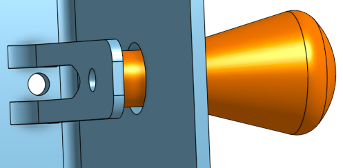
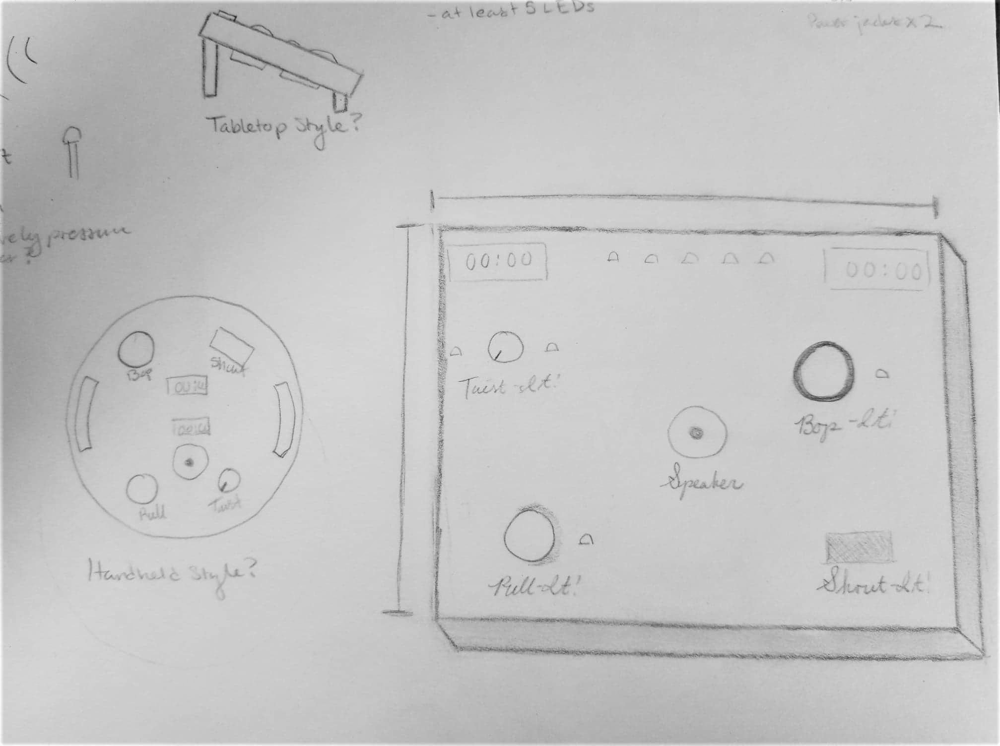

Mechanical Subsystem
The main features of this mechanical system included the functions of gameplay as well as the enclosure that housed all of the electrical and mechanical components. Some of the mechanical components were off the shelf: the button, LEDs, speaker, protoboard, potentiometer for the twist motion, and a microphone. However, there were several pieces of the system that had to be designed, and are outlined below.
The four actions of the game are bop, twist, pull, and shout. For the bop, shout, and twist, the mechanical parts are off the shelf components, and then their systems are taken care of in the electrical and software systems, and outlined in those sections as such. The pull function was completely designed and fabricated, as shown in the photo below. The “spring” comes straight out of the 3D printed enclosure, and is screwed into an external “pull” handle, shown in orange. The end of the spring piece has a metal contact that touches a matching one on the interior cube face, allowing the connection to be completed.

The main mechanical piece of this was the enclosure; it required a decent amount of iteration and thought to find a housing that would not only fit everything, but also maintain a form factor that was reminiscent of the original Bop-It game. As seen in the sketches below, it started out as a tabletop format, and then switched to a more circular form with handles, and finally to a cube shape.

The cube seemed to be the best shape, as it allowed for all four functions, speaker, and displays to be placed in their unique place, and also contained everything properly. It was then fabricated using a 3D printer, which allowed for the most rapid prototyping, and more fun colors. The top side contains the speaker, LEDs, and microphone, and then 3 of the “sides” house the twist, bop, and pull functions on their own cube face. The front side face is left blank in order to have a face to hold onto and for surface resting, and the bottom face comes off of the cube in order to access the internal electrical system.

The CAD can be found here.